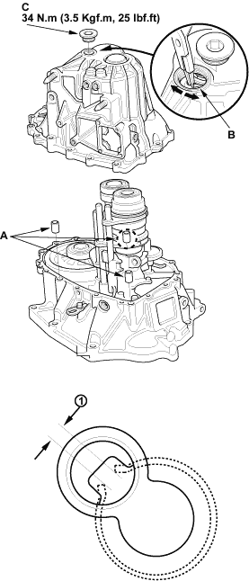
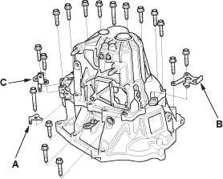
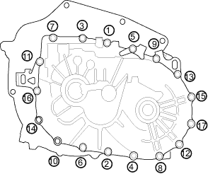

- Install the 14 x 20 mm dowel pins (A).

- Place the transmission housing over the clutch housing, being careful to line up the shafts.

- Lower the transmission housing the rest of the way as you expand the 72 mm snap ring (B). Release the snap ring so it seats in the groove of the countershaft bearing.
- Check that the 72 mm snap ring is securely seated in the groove of the countershaft bearing.
Dimension (1) as installed:
3.3 - 6.0 mm
(0.13 - 0.24 in.)
- Apply liquid gasket (P/N 08C70-K0234M) to the threads of the 32 mm sealing cap (C), and install it on the transmission housing.
- Install the harness bracket (A), the transmission hanger A (B), the transmission hanger B (C), and the 8 mm flange bolts finger-tight.

- Tighten the 8 mm flange bolts in a criss-cross pattern in several steps.
8 x 1.25 mm
27Nm (2.8kg/m, 20lbf/ft)
